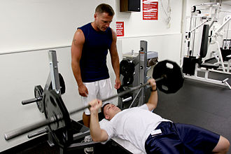

The bench press is an upper-body weight training exercise in which the trainee presses a weight upwards while lying on a weight training bench. The exercise uses the pectoralis major, the anterior deltoids, and the triceps, among other stabilizing muscles. A barbell is generally used to hold the weight, but a pair of dumbbells can also be used.
